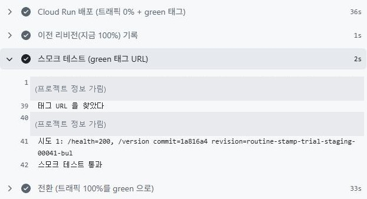
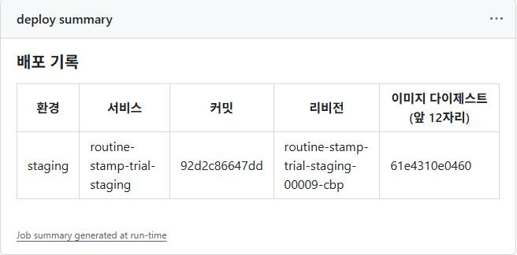
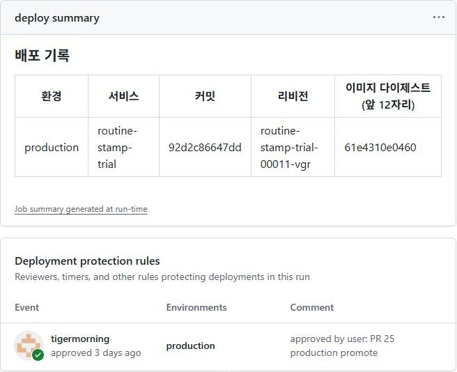
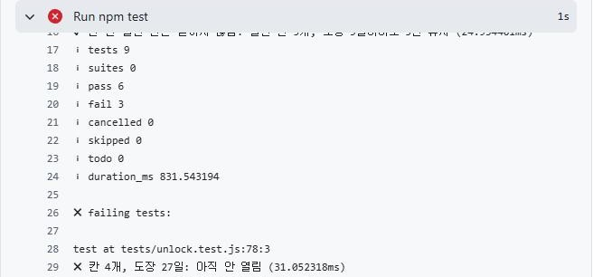

«배포 성공»이라더니요?;; — AI 서비스 인 프로덕션 모듈 요약(63~71번 노드)
2026. 10. 30.
※ 이 글은 모두의연구소(모두연) 학습 자료를 제 나름의 말로 다시 정리한 글이에요.
내가 만든 AI 앱을 다른 사람이 쓰도록 내보내고, 고치는 동안에도 사용자가 오류를 보지 않게 하는 법을 아홉 날 동안 배웠어요.
들어가며 — 예제 앱으로 배우고, 내 앱에 옮기기
수업은 예제 앱으로 배웠어요. 같은 기간에 배운 것을 내가 만든 루틴 앱 도장판에도 하나씩 옮겼어요. 도장판은 계획 세우기가 어려운 사람을 위해 «계획표는 건너뛰고, 오늘 도장 하나부터»라는 약속으로 만든 앱이에요.
그래서 이 글은 노드마다 배운 것과 도장판에 옮긴 것을 함께 적어요. 옮기지 못한 것과 아직 못 푼 것도 숨기지 않고 적어요.
한 장 그림 — 전체 지도
이 글이 묶은 노드
▼ 각 주제 구역에 마우스를 대 보세요
설계 노드 63 · 10.19
하는 일 코드를 짜기 전에, 누구에게 어디서 어떻게 쓰게 할지 정해서 문서(PRD) 한 장으로 남겨요.
직접 확인한 것 코드 없이 프로토타입(시제품)으로 먼저 확인한 뒤, 구조 그림과 PRD 한 장으로 정리했어요.
도장판에 옮긴 일 도장판 PRD 한 장을 썼어요(10.19). 체험판을 먼저 만들고 나중에 정리한 문서예요.
Cloud Run 노드 64·65 · 10.20~21
하는 일 Cloud Run은 코드 폴더를 올리면 공개 주소를 붙여 주는 구글 서비스예요. 서버가 정상이라고 해도 사용자가 답을 못 받을 수 있어서, 타임아웃과 로그를 봐요.
직접 확인한 것 새 버전과 옛 버전 사이로 요청을 옮겨 보고, API 키를 Secret Manager에 연결하고, 로그 세 종류를 찾아 읽었어요.
도장판에 옮긴 일 시험용(staging)과 실제(production) 두 Cloud Run 서비스로 나눠 올렸어요. 타임아웃·인스턴스 수는 배포 설정 파일에 따로 정해 두지 않았어요.
자세한 글 노드 64 · Cloud Run에 소스를 배포한다는 것 · 노드 65 · 배포한 AI 서비스가 말없이 틀리는 순간
CI/CD 노드 66·67 · 10.22~23
하는 일 CI는 합쳐 달라는 요청(PR)이 올라올 때마다 서버가 테스트를 자동으로 돌려 깨진 코드를 찾아 줘요. CD는 코드가 main에 합쳐지면 새 버전을 서비스에 자동으로 올려요. 코드를 합치는 건 사람이 해요.
직접 확인한 것 내 앱(도장판)에서 일부러 깨뜨린 변경(PR #9)은 테스트 9개 중 3개가 실패했어요. 테스트가 실패하면 합치기를 막는 규칙(브랜치 보호)은 연습용 템플릿 저장소에서만 걸어 봤고, 거기서 main에 직접 올리는 것(push)이 GH006으로 거절됐어요. 도장판 main에는 이 규칙이 없어요.
도장판에 옮긴 일 PR마다 테스트(ci)가 «칸 열림 일정»을 확인하고, staging·main에 합치면 키 파일 없이(WIF) 자동 배포돼요. production은 지정한 사람이 승인해야 나가요.
자세한 글 노드 66 · 코드를 머지하면 서비스가 저절로 바뀌는 길 · 노드 67 · 합치기 전에 테스트하고 내보내기 전에 먼저 본다
Docker 노드 68·69 · 10.26~27
하는 일 설명서(Dockerfile)로 이미지(코드와 실행 환경을 담은 꾸러미)를 한 번만 만들어요. 시험 서버에서 확인한 그 이미지를 실제 서비스에 그대로 보내요. 다시 만들면 내용이 달라질 수 있어서예요.
직접 확인한 것 시험 서버(staging)와 실제 서비스(production)에 나간 이미지의 고유 번호(다이제스트, 64자리)가 끝까지 같았어요. 그래서 같은 이미지예요. 시험 서버에서 이전 이미지로 되돌리는(롤백) 배포도 해 봤는데, 약 24초 걸렸어요.
도장판에 옮긴 일 Dockerfile에 사진 글자 읽기 프로그램(tesseract·한국어 데이터)까지 적었어요. production은 staging에서 만든 이미지를 다시 만들지 않고 승격해요.
자세한 글 노드 68 · 로컬에서는 되는데 서버에서만 안 되는 이유 · 노드 69 · 시험한 이미지와 내보낸 이미지가 같다는 증거
배포 전략 노드 70·71 · 10.28~29
하는 일 새 버전을 요청 0%로 먼저 올려 두고, 준비가 됐는지 확인한 뒤에만 요청을 옮겨요.
직접 확인한 것 기본 확인 방식에서는 요청 389건 중 71건이 실패했고, /health 확인 방식에서는 283건 중 0건이 실패했어요. (아래 «내 예시»)
도장판에 옮긴 일 Nginx(노드 70)는 옮기지 않았어요. 노드 71의 순서(요청 0% → /health 시작 검사 → 태그 주소로 스모크 테스트 → 전환, 롤백 버튼)는 staging 브랜치에만 넣었고 main에는 아직 없어요.
자세한 글 노드 70 · 새 버전으로 바뀌는 몇 초 동안 · 노드 71 · 배포하는 동안 사용자는 오류를 봤을까
지도 따라 읽기 — 한 칸씩
출발 · 설계 노드 63
코드를 짜기 전에, 누구에게 어디서 어떻게 쓰게 할지 정해서 문서(PRD) 한 장으로 남겨요.
직접 해 보니 — 코드 없이 프로토타입(시제품)으로 먼저 확인한 뒤, 구조 그림과 PRD 한 장으로 정리했어요. 자세히
1·2칸 · 테스트와 합치기 (CI/CD) 노드 66·67
CI는 합쳐 달라는 요청(PR)이 올라올 때마다 테스트를 자동으로 돌려 깨진 코드를 찾아 주고, CD는 코드가 main에 합쳐지면 새 버전을 자동으로 배포해요. 열쇠 파일 없이 일회용 신분증(WIF)으로 Google Cloud에 들어가요.
직접 해 보니 — 일부러 고장 낸 변경(PR #5)은 새 버전(00003)이 시작하지 못해서 사용자에게 나가지 않았어요. 도장판에서 일부러 깨뜨린 변경(PR #9)은 테스트 9개 중 3개가 실패했어요. 자세히
3칸 · 이미지 만들기 (Docker) 노드 68·69
실행 환경을 설명서(Dockerfile)에 적어 이미지(코드와 실행 환경을 담은 꾸러미)를 만들어요. 한 번 만든 이미지를 시험 서버와 실제 서비스에 그대로 써요.
직접 해 보니 — 서버에 필요한 프로그램이 없어 같은 사진에 500 오류가 났는데, Dockerfile로 환경을 정하자 200으로 바뀌었어요. 시험 서버와 실제 서비스에 나간 이미지의 고유 번호(다이제스트)가 64자리까지 같아서 같은 이미지임을 확인했어요. 자세히
4·5칸 · 시험 서버, 합치고 승인 (staging → main) 노드 67·69
실제 서비스와 같은 방식으로 도는 시험용 서비스에 먼저 올려서 확인해요. 실제 서비스(production)에는 사람이 승인해야 나가요.
직접 해 보니 — staging을 main으로 올리자 테스트는 통과했지만, 실제 서비스 배포는 «승인 대기»에서 멈춰 사람이 누르기 전에는 바뀌지 않았어요. 자세히
6칸 · 요청 옮기기 (배포 전략) 노드 70·71
새 버전을 요청 0%로 먼저 올려 두고, 준비가 됐는지 확인한 뒤에만 사용자의 요청을 옮겨요.
직접 해 보니 — 노드 70에서는 서버 두 벌 앞의 Nginx로 방향을 바꿔 봤어요(서버가 멈췄을 때 연결 대기를 60초→1초로 줄이자 137건 중 19건 실패 → 284건 중 0건). 노드 71의 실험은 아래 «확장»에 있어요. 자세히
도착 · 실제 서비스 (Cloud Run) 노드 64·65
코드 폴더를 올리면 공개 주소를 붙여 실행해 주는 구글 서비스예요. 서버 기록이 정상이어도 사용자가 답을 못 받을 수 있어서, 타임아웃과 로그를 봐요.
직접 해 보니 — 명령 한 줄로 약 2분 만에 공개 주소가 생겼어요. 타임아웃을 1초로 줄이자 서버 기록은 200(정상)인데 화면은 «답을 받지 못했어요»가 떠서, 실제 걸린 시간(요청 하나 약 5초)보다 넉넉하게 정했어요. 자세히
숫자로 본 변화
| 무엇을 바꿨나 | 바꾸기 전 | 바꾼 뒤 | 노드 |
|---|---|---|---|
| 사진 기능 — Dockerfile로 실행 환경을 정하기 | 500 오류 | 200 정상 | 68 |
| 서버가 멈췄을 때 — Nginx 연결 대기 60초 → 1초 | 137건 중 19건 실패 | 284건 중 0건 실패 | 70 |
| 배포하는 동안 — 준비 검사를 기본 프로브 → /health로 | 389건 중 71건 실패 | 283건 중 0건 실패 | 71 |
| 배포가 끝나기까지 걸린 시간 — 위와 같은 바꿈 | 약 19초 | 약 62초 | 71 |
| 두 관문을 넣은 배포 과정으로 배포하는 동안(PR #29) | — | 714건 중 0건 실패 | 71 |
준비 검사를 바꾸자 배포는 더 오래 걸렸지만, 그동안 사용자는 이전 버전을 그대로 썼어요.
확장 — 배포는 "성공"인데 요청 71건이 실패한 이유
새 버전이 시작하는 데 30초가 걸리는 예제 앱을 일부러 배포하고, 배포하는 동안 같은 주소에 0.2초마다 요청을 보내 실패를 셌어요.
/health 프로브는 앱이 준비될 때까지 기다리기 때문에, 배포가 끝나기까지 시간이 더 걸렸어요(약 19초 → 약 62초). 그동안 사용자는 이전 버전을 그대로 썼어요.
무엇을 배웠나. «배포 성공»은 새 버전이 떴다는 뜻이지, 사용자가 제대로 된 답을 받는다는 뜻이 아니에요. 그래서 노드 71에서는 배포 순서를 바꿨어요. 새 버전을 요청 0%로 먼저 올려 두고, 두 번 걸러진 뒤에만 요청을 옮겨요.
| 첫 관문 — 스타트업 프로브 | 둘째 관문 — 스모크 테스트 | |
|---|---|---|
| 누가 | Cloud Run이 자동으로 | 내 배포 자동화(워크플로)가 |
| 언제 | 새 버전이 시작될 때 | 요청을 옮기기 직전 |
| 묻는 것 | 손님을 받을 준비가 됐나? | 내가 원한 그것이고 정상인가? |
| 걸리면 | 배포가 실패하고 멈춰요 | 요청을 옮기지 않고 멈춰요 |
스모크 테스트는 원래 서비스 주소가 아니라 새 버전 전용 주소(태그 URL)로 해야 해요. 원래 주소에는 아직 이전 버전이 답해서, 새 버전이 망가져 있어도 «정상»으로 통과하기 때문이에요.
결과. 이렇게 바꾼 배포 과정으로 배포하는 동안(PR #29) 요청 714건 중 실패는 0건이었어요. 일부러 망가뜨린 버전(/health가 503)은 첫 관문에서 걸려 배포가 멈췄고, 요청은 그대로 이전 버전이 받았어요(이 시험은 gcloud 명령으로 했어요).
흔한 오류 — 내 경우와 고친 법
| 이런 증상이 보이면 | 왜 | 고친 법 | 노드 |
|---|---|---|---|
| 로컬에서는 되는데 서버에서만 같은 사진에 500 | 서버에 필요한 프로그램이 없었어요 | Dockerfile에 실행 환경을 적어 → 200 | 68 |
| 서버 기록은 200인데 화면엔 «답을 받지 못했어요» | 타임아웃(1초)이 실제 걸린 시간(약 5초)보다 짧았어요 | 실제 걸린 시간보다 넉넉하게 정하기 | 65 |
| 배포는 «성공»인데 요청 389건 중 71건 실패 | 기본 프로브는 포트만 봐서, 준비 안 된 새 버전에 요청이 갔어요 | /health 시작 검사 + 요청 0%로 올린 뒤 옮기기 | 71 |
| 서버를 하나 껐는데 요청이 계속 실패(137건 중 19건) | 꺼진 서버에 연결을 60초씩 기다렸어요 | 연결 대기 1초로 줄여 다른 서버로 → 284건 중 0건 | 70 |
| 망가진 새 버전이 스모크 테스트를 통과 | 원래 주소에는 아직 이전 버전이 답해요 | 새 버전 전용 주소(태그 URL)로 시험하기 | 71 |

배운 점 — 노드를 가로질러
- «배포 성공»은 새 버전이 떴다는 뜻이었어요. 배포 명령은 성공인데 요청 389건 중 71건이 실패했어요. 사용자 쪽에서 직접 세어 보고서야 알았어요. 노드 71
- 서버 기록이 정상이어도 사용자는 답을 못 받을 수 있었어요. 타임아웃을 1초로 줄이자 서버 기록은 200인데 화면에는 «답을 받지 못했어요»가 떴어요. 노드 65
- 내 컴퓨터와 서버는 다른 환경이었어요. 서버에 필요한 프로그램이 없어 같은 사진에 500이 났고, Dockerfile에 환경을 적고 나서야 200이 됐어요. 노드 68
- «같은 것을 내보냈다»는 증거는 다시 만들지 않는 데서 나왔어요. 이미지를 한 번만 만들어 옮기자 시험 서버와 실제 서비스의 다이제스트가 64자리까지 같았어요. 노드 69
- 자동화가 막는 곳과 사람이 지키는 곳은 따로 있었어요. 테스트는 깨뜨린 변경을 잡았지만(PR #9, 9개 중 3개 실패), 실제 서비스로 내보내는 건 사람이 승인해야 했어요. 노드 66·67
도장판에서 본 장면



활용 — 내 앱(도장판)에 세 질문을 대 보기
도장판은 오늘 할 일 칸 세 개에 도장을 찍는 루틴 앱이에요. 도장이 쌓이면 칸이 하나씩 열려요.

이 앱의 배포 기록은 GitHub에 그대로 남아 있어요. 세 질문을 이 화면에 대 보면 이래요.
 123
123
- 1 어떤 버전이 나갔나 — 배포 실행(
deploy #19)마다 코드 버전 번호(커밋1a816a4)가 남아요. - 2 사용자에게 오류가 보였나 — 합쳐 달라는 요청(PR)마다 테스트(
ci)가 자동으로 돌고, 통과는 초록 체크, 실패는 빨간 ×로 보여요. - 3 이전 버전으로 돌릴 수 있나 —
rollback을 버튼으로 직접 실행해 이전 버전으로 돌려요(#3, 38초).
적용 점검
- ✅ PR마다, 그리고 배포 직전에 한 번 더 테스트(ci)가 돌아요.
- ✅ 키 파일 없이(WIF) 배포해요.
- ✅ production은 지정한 사람이 승인해야 나가요.
- ✅ production은 staging에서 만든 이미지를 다시 만들지 않고 승격해요.
- ✅ 배포마다 커밋·리비전·다이제스트를 실행 요약에 남겨요.
- ✅ staging은 요청 0% → /health·/version 스모크 테스트 → 전환 순서로 바뀌고, 롤백 버튼도 있어요(#3, 38초).
- ❌ 그 순서와 롤백 버튼은 아직 main(production)에 없어요.
- ❌ 테스트는 «칸 열림 일정»만 확인해요. 화면과 사진 글자 읽기 결과는 사람이 확인해요.
- ❌ main에 보호 규칙이 없어서, 테스트가 실패해도 합칠 수는 있어요(배포는 테스트를 통과해야 돼요).
- ❌ GitHub Pages가 저장소 전체를 공개해서 시험 파일(tests 폴더)까지 열려요.
- ➖ Nginx 블루그린(노드 70)은 옮기지 않았어요. 대신 Cloud Run이 리비전 사이로 요청을 옮기는 노드 71 방식을 staging에 넣었어요.
정리하면 배포 길(테스트·승인·승격·기록)은 도장판에도 그대로 옮겼어요. 비어 있는 곳은 두 군데예요. 노드 71의 순서가 아직 production에 없고, 배포 뒤에 화면과 기능이 제대로 도는지는 사람이 확인해요.
정리 — 다시 한 줄로
시작은 명령 한 줄로 공개 주소를 받는 것이었어요(약 2분). 끝날 때는 변경 하나가 테스트 → staging에 합치기 → 이미지 한 번 만들기 → 시험 서버 → main에 합치고 승인 → 요청 옮기기를 거치는 배포 길을 만들었어요.
새 버전으로 바뀌는 동안 실패한 요청은 389건 중 71건 → 283건 중 0건이 됐어요(같은 예제 앱에서 준비 검사만 바꿔서).
결론 — «배포 성공»은 새 버전이 떴다는 뜻이지, 사용자가 제대로 된 답을 받는다는 뜻이 아니에요. 그래서 세 질문(어떤 버전이 나갔나 · 사용자에게 오류가 보였나 · 이전 버전으로 돌릴 수 있나)에 숫자로 답할 수 있게 만드는 것이 이 모듈의 일이에요.
아직 못 푼 것
- 요청 옮기기까지 넣은 배포 과정은 production도 대상으로 만들었지만, 실행은 staging에서만 했어요. main에 합치고 production을 승인하는 데까지는 돌려 보지 못했어요. 노드 71
- 이전 버전으로 되돌리기도 staging에서만 해 봤어요. production에서 실제로 되돌려 본 적은 없어요. 노드 69
- 도장판의 0% → 스모크 → 전환 순서와 롤백 버튼은 staging에만 있고, main(production)에는 아직 없어요. 스모크 테스트는 /health와 /version만 봐서 화면과 사진 글자 읽기 결과는 사람이 확인해요(위 «적용 점검»).